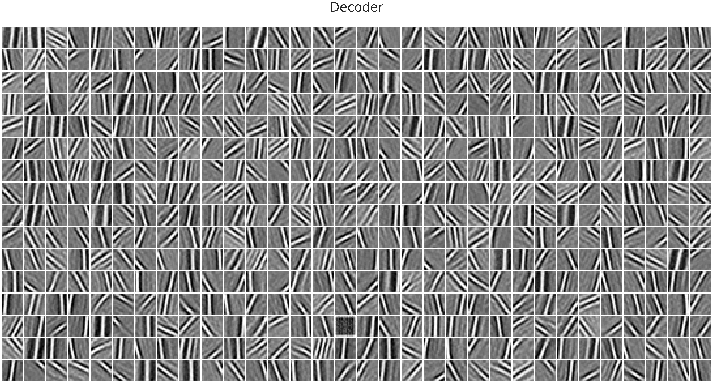
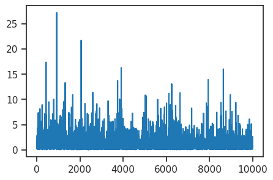
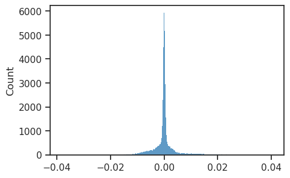
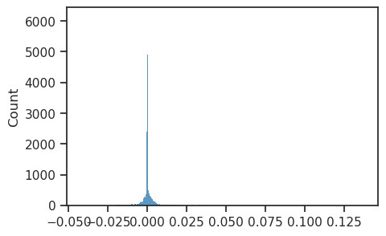
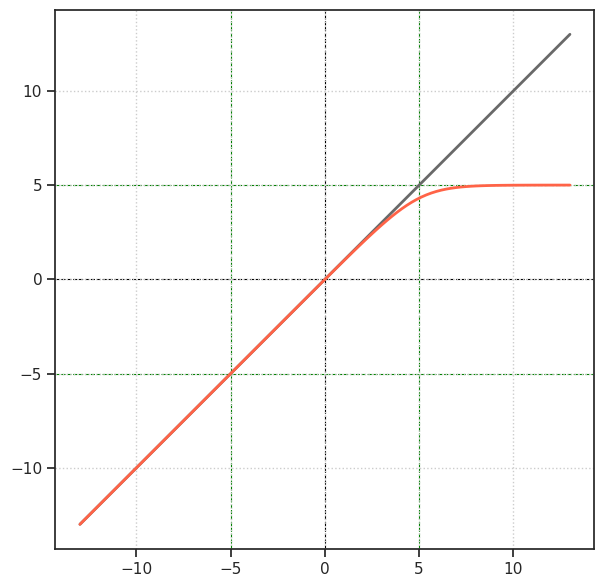

tmp — mar24#
Motivation: scratch notebook
Show code cell source
# HIDE CODE
import os, sys
from IPython.display import display
# tmp & extras dir
git_dir = os.path.join(os.environ['HOME'], 'Dropbox/git')
extras_dir = os.path.join(git_dir, 'jb-vae/_extras')
fig_base_dir = os.path.join(git_dir, 'jb-vae/figs')
tmp_dir = os.path.join(git_dir, 'jb-vae/tmp')
# GitHub
sys.path.insert(0, os.path.join(git_dir, '_PoissonVAE'))
from figures.fighelper import *
# warnings, tqdm, & style
warnings.filterwarnings('ignore', category=DeprecationWarning)
from rich.jupyter import print
%matplotlib inline
set_style()
First fit Gaussian#
from vae.vae import GaussianVAE, ConfigGausVAE
from vae.train_vae import TrainerVAE, ConfigTrainVAE
kws_tr = dict(
temp_anneal_portion=0.0,
# temp_anneal_type='lin',
# temp_start=1.0,
temp_stop=1.0,
)
vae = GaussianVAE(ConfigGausVAE(latent_act='exp', fit_prior=False))
tr = TrainerVAE(vae, ConfigTrainVAE(**kws_tr), device=torch.device('cuda:0'))
x = torch.tensor(([-3, -1, 0, 4, 6]))
vae._act_fn(x)
tensor([4.9787e-02, 3.6788e-01, 1.0000e+00, 5.4598e+01, 4.0343e+02])
vae.print()
print(f"{vae.cfg.name()}\n{tr.cfg.name()}")
+-------------+------------+ | Module Name | Num Params | +-------------+------------+ | GaussianVAE | 393.2 K | | --- | --- | | fc_enc | 262.1 K | | fc_dec | 131.1 K | +-------------+------------+
gaussian_exp_DOVES_z-512_k-32_lin+lin ep3600-b1000-lr(0.005)_beta(1:0x0.3)_gr(500)
# comment = f"wd-0_{tr.cfg.name()}"
comment = tr.cfg.name()
tr.train(comment=comment)
epoch # 2450, avg loss: 305.374030: 68%|███████████████▋ | 2450/3600 [17:11<07:54, 2.43it/s]IOPub message rate exceeded.
The Jupyter server will temporarily stop sending output
to the client in order to avoid crashing it.
To change this limit, set the config variable
`--ServerApp.iopub_msg_rate_limit`.
Current values:
ServerApp.iopub_msg_rate_limit=1000.0 (msgs/sec)
ServerApp.rate_limit_window=3.0 (secs)
epoch # 3600, avg loss: 304.301017: 100%|███████████████████████| 3600/3600 [25:10<00:00, 2.38it/s]
## Was: trainable prior, exp, w/o z regularization
epoch # 3600, avg loss: 161.169132: 100%|███████████████████████| 3600/3600 [25:16<00:00, 2.37it/s]
## Was act=None
epoch # 3600, avg loss: 161.705026: 100%|███████████████████████| 3600/3600 [22:29<00:00, 2.67it/s]
## Was act='sigmoid'
epoch # 3600, avg loss: 162.820673: 100%|███████████████████████| 3600/3600 [22:39<00:00, 2.65it/s]
### Was act='quartic'
epoch # 3600, avg loss: 186.417669: 100%|███████████████████████| 3600/3600 [22:50<00:00, 2.63it/s]
### Was act='square'
epoch # 3600, avg loss: 174.474882: 100%|███████████████████████| 3600/3600 [22:47<00:00, 2.63it/s]
### Was act='softplus'
epoch # 3600, avg loss: 165.101929: 100%|███████████████████████| 3600/3600 [22:13<00:00, 2.70it/s]
### Was act='relu'
epoch # 3600, avg loss: 172.672808: 100%|███████████████████████| 3600/3600 [22:38<00:00, 2.65it/s]
### Was act='exp'
epoch # 3600, avg loss: 180.199391: 100%|███████████████████████| 3600/3600 [22:11<00:00, 2.70it/s]
### Was act=None
epoch # 3600, avg loss: 161.675302: 100%|███████████████████████| 3600/3600 [24:20<00:00, 2.46it/s]
data, loss, etc = tr.validate(temp=1.0)
_loss = {k: v.mean() for k, v in loss.items()}
_loss['tot'] = _loss['mse'] + _loss['kl']
print(_loss)
{'mse': 173.71397, 'kl': 61.281628, 'kl_diag': 0.11960985, 'tot': 234.9956}
## Was: trainable prior, exp, w/o z regularization
{'mse': 122.049355, 'kl': 37.69493, 'kl_diag': 0.07322525, 'tot': 159.7443}
## Was act=None
{'mse': 122.64633, 'kl': 37.60813, 'kl_diag': 0.073051184, 'tot': 160.25446}
## Was act='sigmoid'
{'mse': 124.859116, 'kl': 36.460606, 'kl_diag': 0.070831284, 'tot': 161.31972}
### Was act='quartic'
{'mse': 172.98209, 'kl': 7.1324954, 'kl_diag': 0.0137448665, 'tot': 180.11458}
### Was act='square'
{'mse': 150.53221, 'kl': 19.554455, 'kl_diag': 0.03778749, 'tot': 170.08667}
### Was act='softplus'
{'mse': 126.47816, 'kl': 36.346104, 'kl_diag': 0.07056635, 'tot': 162.82426}
### Was act='relu'
{'mse': 139.15582, 'kl': 30.132566, 'kl_diag': 0.05843747, 'tot': 169.28839}
### Was act='exp'
{'mse': 157.49693, 'kl': 19.124714, 'kl_diag': 0.036983438, 'tot': 176.62164}
### Was act=None
{'mse': 122.794136, 'kl': 37.5686, 'kl_diag': 0.07297355, 'tot': 160.36273}
w_dec = tr.model.fc_dec.weight.T.reshape(tr.model.shape)
w_enc = tr.model.fc_enc.weight.reshape(tr.model.shape)
w_dec, w_enc = map(to_np, [w_dec, w_enc])
grid_dec = make_grid(w_dec, (16, 32))
grid_enc = make_grid(w_enc, (32, 32))
w_dec.shape, w_enc.shape
((512, 1, 16, 16), (1024, 1, 16, 16))
kws = dict(
vmin=0,
vmax=1,
cmap='Greys_r',
)
fig, axes = create_figure(1, 2, (11, 5.3), layout='constrained', width_ratios=[2, 1])
axes[0].imshow(grid_dec, **kws)
axes[1].imshow(grid_enc, **kws)
axes[0].set_title('Decoder', fontsize=13, y=1.01)
axes[1].set_title('Encoder', fontsize=13, y=1.01)
remove_ticks(axes)
plt.show()
## Fit prior, exp, strong z reg
## Was: trainable prior, exp, w/o z regularization

### Was act='sigmoid'
### Was act='quartic'
### Was act='square'
### Was act='softplus'
### Was act='exp'

### Was act=None
fig, ax = create_figure(1, 1, (50, 26), dpi=200)
ax.imshow(grid_dec, **kws)
ax.set_title('Decoder', fontsize=50, y=1.04)
remove_ticks(ax)
plt.show()
## Was: trainable prior, exp, w/o z regularization
### Was act='sigmoid'
### Was act='quartic'

### Was act='square'
### Was act='softplus'
### Was act='relu'
### Was act='exp'
### Was act=None

sns.histplot(to_np(vae.mu).ravel());
sns.histplot(to_np(vae.logsig.exp()).ravel());
plt.plot(data['z'][:10000, 2]);

### Was act=None
### Was act='sigmoid'
### Was act='quartic'
[<matplotlib.lines.Line2D at 0x7fa2d1528590>]
### Was act='square'
[<matplotlib.lines.Line2D at 0x7fc6f811e810>]
### Was act='softplus'
[<matplotlib.lines.Line2D at 0x7f65f47d0b10>]
### Was act='relu'
[<matplotlib.lines.Line2D at 0x7f4dc446bf50>]
### Was act='exp'
[<matplotlib.lines.Line2D at 0x7f88a4408090>]
sns.histplot(to_np(vae.fc_enc.weight.data.ravel()));
### Was act=None
### Was act='sigmoid'
### Was act='quartic'

### Was act='square'

sns.histplot(to_np(vae.fc_enc.weight.data.ravel()));
### Was act='relu'
<Axes: ylabel='Count'>
### Was act='exp'
<Axes: ylabel='Count'>
plt.plot(tr.temperatures)
[<matplotlib.lines.Line2D at 0x7f4cd5ba7fd0>]
x = next(iter(tr.dl_vld))
q, z, y = vae(x)
fig, axes = create_figure(1, 3, (9, 2), sharey='row', layout='constrained')
sns.histplot(to_np(q.mu).ravel(), stat='percent', label=r'$\mu$', kde=True, ax=axes[0])
sns.histplot(to_np(q.sigma).ravel(), stat='percent', label=r'$\sigma$', kde=True, ax=axes[1])
sns.histplot(to_np(z).ravel(), stat='percent', label=r'$f(z)$', color='tomato', kde=True, ax=axes[2])
for ax in axes.flat:
ax.legend(fontsize=11)
plt.show()
q, z, y = vae(x / 10)
fig, axes = create_figure(1, 3, (9, 2), sharey='row', layout='constrained')
sns.histplot(to_np(q.mu).ravel(), stat='percent', label=r'$\mu$', kde=True, ax=axes[0])
sns.histplot(to_np(q.sigma).ravel(), stat='percent', label=r'$\sigma$', kde=True, ax=axes[1])
sns.histplot(to_np(z).ravel(), stat='percent', label=r'$f(z)$', color='tomato', kde=True, ax=axes[2])
for ax in axes.flat:
ax.legend(fontsize=11)
plt.show()
plt.plot(tr.temperatures);
import torch
from torch.nn import functional as F
_ACT_FN_MAP = {
'softplus': F.softplus,
'sigmoid': torch.sigmoid,
'exp': torch.exp,
'relu': F.relu,
}
cfg_act = 'softplus'
act_fn = _ACT_FN_MAP.get(cfg_act)
act_fn
<function torch._C._nn.softplus>
F.softplus
<function torch._C._nn.softplus>
torch.square(torch.tensor([-5, 0, 0.69, 2, 4]))
tensor([25.0000, 0.0000, 0.4761, 4.0000, 16.0000])
Temperature schedule?#
batch_size = 1000
num_iters= 250000
t0 = 1.0
np_temp = np.zeros(num_iters)
np_temp[0] = t0
lr = 0.001
anneal_rate=0.00003
min_temp = 0.1
for i in range(1, num_iters):
if i % 1000 == 1:
_t = np.maximum(t0 * np.exp(-anneal_rate*i), min_temp)
np_temp[i] = _t
plt.plot(np_temp)
[<matplotlib.lines.Line2D at 0x7f2a0c114310>]
tt = temp_anneal_exp(4000, portion=0.7)
plt.plot(tt)
[<matplotlib.lines.Line2D at 0x7f2a09dd7c90>]
plt.plot(tt[2000-100:2000+100])
[<matplotlib.lines.Line2D at 0x7f2a09e56a50>]
tt[0], tt[2000-2:2000+3]
(1.0, array([0.1022443 , 0.10223758, 0.1 , 0.1 , 0.1 ]))
t = 0.05 almost identical#
def step_function(x):
return np.where(x >= 0, 1, 0)
def sigmoid(x, t=1.0):
return 1 / (1 + np.exp(-x / t))
x = np.linspace(-10, 10, 10000)
plt.figure(figsize=(10, 6))
plt.plot(x, step_function(x), label='Step Function', color='black', lw=2)
temperatures = [1, 0.5, 0.1, 0.05]
colors = ['red', 'green', 'blue', 'purple']
for t, c in zip(temperatures, colors):
plt.plot(x, sigmoid(x, t), label=f'Sigmoid, t={t}', color=c)
plt.title('Step Function and Sigmoid Approximations')
plt.xlabel('x')
plt.ylabel('y')
plt.legend()
plt.grid(True)
plt.show()
from base.distributions import Poisson
rates = torch.tensor([0.01, 0.1, 0.5, 1, 2.0, 10.0])
temp = 0.1
dist = Poisson(torch.log(rates), temp=temp)
samples = []
samples_torch = []
for _ in tqdm(range(100000)):
samples.append(dist.rsample())
samples_torch.append(dist.sample())
samples = torch.stack(samples)
samples_torch = torch.stack(samples_torch)
100%|███████████████████████████████████████████████████████████████████████████████████████████████████████████| 100000/100000 [00:06<00:00, 14865.14it/s]
kws = dict(stat='percent')
fig, axes = create_figure(1, 2, (5, 2), sharey='row', layout='constrained')
kws['bins'] = np.linspace(0, 3, 61) - 0.025
for i in range(3):
# Schur (rsample)
x2p = to_np(samples[:, i])
lbl = f"{rates[i].item():0.2f} Hz"
sns.histplot(x2p, color=f"C{i}", label=lbl, ax=axes[0], **kws)
# PyTorch (sample)
x2p = to_np(samples_torch[:, i])
lbl = f"{rates[i].item():0.2f} Hz"
sns.histplot(x2p, color=f"C{i}", label=lbl, ax=axes[1], **kws)
for ax in axes.flat:
ax.legend(fontsize=9)
axes[0].set_title(f'rsample (t = {temp:0.1f})')
axes[1].set_title(f'sample (true)')
plt.show()
temp = 0.05
dist = Poisson(torch.log(rates), temp=temp)
samples = []
samples_torch = []
for _ in tqdm(range(100000)):
samples.append(dist.rsample())
samples_torch.append(dist.sample())
samples = torch.stack(samples)
samples_torch = torch.stack(samples_torch)
100%|███████████████████████████████████████████████████████████████████████████████████████████████████████████| 100000/100000 [00:06<00:00, 14825.09it/s]
kws = dict(stat='percent')
fig, axes = create_figure(1, 2, (5, 2), sharey='row', layout='constrained')
kws['bins'] = np.linspace(0, 3, 61) - 0.025
for i in range(3):
# Schur (rsample)
x2p = to_np(samples[:, i])
lbl = f"{rates[i].item():0.2f} Hz"
sns.histplot(x2p, color=f"C{i}", label=lbl, ax=axes[0], **kws)
# PyTorch (sample)
x2p = to_np(samples_torch[:, i])
lbl = f"{rates[i].item():0.2f} Hz"
sns.histplot(x2p, color=f"C{i}", label=lbl, ax=axes[1], **kws)
for ax in axes.flat:
ax.legend(fontsize=9)
axes[0].set_title(f'rsample (t = {temp:0.2f})')
axes[1].set_title(f'sample (true)')
plt.show()
Bernoulli process#
def kl(q, p):
return q * np.log(q/p) + (1-q) * np.log((1-q)/(1-p))
num = 1001
qq = np.linspace(0, 1, num)
pp = np.linspace(0, 1, num)
y = np_nans((num, num))
for i, q in enumerate(qq):
for j, p in enumerate(pp):
if p in [0, 1] or q in [0, 1]:
continue
y[i, j] = kl(q, p)
ticks, ticklbls = zip(*[
(i, val) for i, val
in enumerate(pp) if
i % (num // 5) == 0
])
fig, ax = create_figure()
im = ax.imshow(y, cmap='Spectral_r')
plt.colorbar(im, ax=ax)
ax.invert_yaxis()
ax.set(
xlabel='p',
ylabel='q',
title=r'$\mathrm{KL}\left(q \vert\vert p\right)$',
xticks=ticks,
yticks=ticks,
xticklabels=ticklbls,
yticklabels=ticklbls,
)
plt.show()
Plot \(\Phi(\frac{\mu}{\sqrt{1 + \sigma^2}})\)#
def Phi(x):
return (1 + torch.erf(x.div(np.sqrt(2)))).mul(0.5)
mu = torch.linspace(-20, 20, 2001)
sigma = torch.linspace(0.01, 50, 5000)
prob = np.zeros((len(mu), len(sigma)))
for i, _m in enumerate(mu):
prob[i] = Phi(_m / torch.sqrt(1 + sigma.pow(2)))
yticks, yticklbls = zip(*[
(i, np.round(val, 2)) for i, val
in enumerate(to_np(mu))
if i % (len(mu) // 8) == 0
])
xticks, xticklbls = zip(*[
(i, np.round(val, 2)) for i, val
in enumerate(to_np(sigma))
if i % (len(sigma) // 7) == 0
])
fig, ax = create_figure(1, 1, (9, 3.8))
im = ax.imshow(prob, vmin=0, vmax=1, aspect=1.3)
plt.colorbar(im, ax=ax)
ax.invert_yaxis()
ax.set(
xlabel=r'$\sigma$',
ylabel=r'$\mu$',
title=r'$p = \Phi(\frac{\mu}{\sqrt{1 + \sigma^2}})$',
xticks=xticks,
yticks=yticks,
xticklabels=xticklbls,
yticklabels=yticklbls,
)
plt.show()
rng = get_rng()
p = 0.8
samples = rng.binomial(1, p, size=1000)
collections.Counter(samples)
Counter({1: 803, 0: 197})
Poisson w/ low rates = Bernoulli?#
r = 0.2
rng = get_rng()
samples = rng.poisson(0.001, size=10000)
rv = sp_stats.poisson(r)
x = np.arange(0, 8)
y = rv.pmf(x)
plt.stem(x, y)
<StemContainer object of 3 artists>
a = torch.nn.Parameter(torch.randn(10, 20), requires_grad=True).cuda()
b = torch.mean(a)
b.grad_fn
<MeanBackward0 at 0x7fa45771e410>
b = a > 1
b.grad_fn
b = torch.poisson(a.exp())
b.grad_fn
<PoissonBackward0 at 0x7fa45771f4c0>
Develop Avg Meter for Rates#
from base.utils_model import AverageMeter
from base.distributions import Poisson
r = 3.0
n_exp = sp_stats.poisson(r).ppf(1.0 - 1e-5)
n_exp = int(n_exp)
n_exp
13
Loader for DOVES#
device_idx = 1
device = torch.device(f'cuda:{device_idx:d}')
dim = 16
data_path = pjoin(os.environ['HOME'], 'Datasets/DOVES', f'xtract{dim}')
data = np.load(pjoin(data_path, 'processed.npy'))
data.shape
(101, 1344, 1, 16, 16)
Speed up Poisson rsample#
from torch.distributions import Exponential
from base.distributions import Poisson
log_rates = torch.randn(200, 1000) * 20
log_rates = log_rates.cuda()
%timeit dist = Poisson(log_rates, temp=0.5)
23.5 µs ± 1.7 µs per loop (mean ± std. dev. of 7 runs, 10 loops each)
%timeit dist = Poisson(log_rates, temp=0.5, n_exp=271)
21.4 µs ± 98.2 ns per loop (mean ± std. dev. of 7 runs, 10,000 loops each)
dist = Poisson(log_rates, temp=0.5)
dist.n_exp
263
%%time
d = Exponential(dist.rates)
x = d.rsample((1600,))
CPU times: user 0 ns, sys: 3.83 ms, total: 3.83 ms
Wall time: 2.86 ms
%timeit d.rsample((30,))
42.6 µs ± 1.03 µs per loop (mean ± std. dev. of 7 runs, 10,000 loops each)
%timeit d.rsample((300,))
872 µs ± 175 ns per loop (mean ± std. dev. of 7 runs, 1,000 loops each)
%timeit d.rsample((1600,))
4.6 ms ± 920 ns per loop (mean ± std. dev. of 7 runs, 1,000 loops each)
%%time
spks = dist.rsample()
CPU times: user 1.95 ms, sys: 0 ns, total: 1.95 ms
Wall time: 1.24 ms
from torch import nn
from torch.nn import functional as F
from _tmp.gapvae import prepare_stuff, iteration, validate
from _tmp.plotters import plot_latent_space, plot_latent_scatter
n_latents = 1000
weight_norm = True
batch_size = 200
epochs = 300
pvae, optim, optim_schedule, trn, vld, device, kws_iter = prepare_stuff(
model='pois',
device_idx=0,
n_latents=n_latents,
weight_norm=weight_norm,
max_grad_norm=500,
batch_size=batch_size,
epochs=epochs,
lr=1e-3,
beta=1.0,
)
+-------------+------------+ | Module Name | Num Params | +-------------+------------+ | PoissonVAE | 8.9 Mil | | --- | --- | | enc | 6.6 Mil | | fc_enc | 33.0 K | | dec | 1.2 Mil | | fc_dec | 1.0 Mil | +-------------+------------+
x, _ = next(iter(vld))
x = x.to(device)
self = pvae
%%time
log_dr = self.fc_enc(self.enc(x))
log_r = self.log_rates.expand(len(x), -1)
dist = Poisson(
log_rates=log_r + log_dr,
temp=self.temp,
n_exp=3000,
)
CPU times: user 34.4 ms, sys: 3.09 ms, total: 37.5 ms
Wall time: 36.1 ms
%%time
spks = dist.rsample()
# Decode
h = self.fc_dec(spks)
h = h.view(*self.shape)
x_recon = self.dec(h)
CPU times: user 6.99 ms, sys: 3.43 ms, total: 10.4 ms
Wall time: 9.22 ms
out = {
'log_r': log_r,
'log_dr': log_dr,
'spks': spks,
'x_recon': x_recon,
}
%%time
loss_dict = pvae.compute_loss(x, **out)
loss = loss_dict['tot'] / len(x)
CPU times: user 2.09 ms, sys: 1.18 ms, total: 3.27 ms
Wall time: 2 ms
%%time
loss.backward()
CPU times: user 39.1 ms, sys: 35.5 ms, total: 74.6 ms
Wall time: 72.7 ms
%timeit sp_stats.poisson(np.exp(5.3)).ppf(1.0 - 1e-4)
286 µs ± 2.47 µs per loop (mean ± std. dev. of 7 runs, 1,000 loops each)
sp_stats.poisson(np.exp(5.3)).ppf(1.0 - 1e-5)
263.0
1 - 1e-3
0.999
%%time
out = pvae(x)
CPU times: user 412 ms, sys: 75.6 ms, total: 488 ms
Wall time: 486 ms
%%time
loss_dict = pvae.compute_loss(x, **out)
loss = loss_dict['tot'] / len(x)
CPU times: user 9.08 ms, sys: 12 ms, total: 21.1 ms
Wall time: 19.7 ms
%%time
loss.backward()
CPU times: user 433 ms, sys: 80.3 ms, total: 513 ms
Wall time: 612 ms
%%time
grad_norm = nn.utils.clip_grad_norm_(
parameters=get_params(pvae),
max_norm=500,
).item()
CPU times: user 7.13 ms, sys: 23.7 ms, total: 30.8 ms
Wall time: 205 ms
%%time
optim.step()
optim_schedule.step()
CPU times: user 20.9 ms, sys: 8.4 ms, total: 29.3 ms
Wall time: 28.7 ms
60000 / 200
300.0
300 * 1.5 / 60
7.5
pvae, optim, optim_schedule, trn, vld, device, kws_iter = prepare_stuff(
model='pvaest',
device_idx=0,
n_latents=n_latents,
weight_norm=weight_norm,
max_grad_norm=500,
batch_size=batch_size,
epochs=epochs,
lr=1e-3,
beta=1.0,
)
+--------------+------------+ | Module Name | Num Params | +--------------+------------+ | PoissonVAEST | 8.9 Mil | | --- | --- | | enc | 6.6 Mil | | dec | 2.3 Mil | +--------------+------------+
%%time
out = pvae(x)
CPU times: user 5.13 ms, sys: 26.6 ms, total: 31.7 ms
Wall time: 31.2 ms
\(486 \rightarrow 31.2\)
%%time
loss_dict = pvae.compute_loss(x, **out)
loss = loss_dict['tot'] / len(x)
CPU times: user 48 µs, sys: 11.8 ms, total: 11.8 ms
Wall time: 10.1 ms
\(19.7 \rightarrow 10.1\)
%%time
loss.backward()
CPU times: user 18.4 ms, sys: 11.9 ms, total: 30.3 ms
Wall time: 29.7 ms
\(612 \rightarrow 29.7\)
%%time
grad_norm = nn.utils.clip_grad_norm_(
parameters=get_params(pvae),
max_norm=500,
).item()
CPU times: user 733 µs, sys: 15.6 ms, total: 16.3 ms
Wall time: 113 ms
\(205 \rightarrow 113\)
%%time
optim.step()
optim_schedule.step()
CPU times: user 10.7 ms, sys: 3.72 ms, total: 14.4 ms
Wall time: 13.3 ms
\(28.7 \rightarrow 13.3\)
Gaussian CDF (closed form)#
\(E_{\mu, \sigma^2}[\Phi(X)] = \Phi(\frac{\mu}{\sqrt{1 + \sigma^2}})\)
def Phi(x):
return (1 + torch.erf(x.div(np.sqrt(2)))).mul(0.5)
x = torch.linspace(-4.5, 4.5, 1000)
fig, ax = create_figure(1, 1, (5, 4))
ax.plot(x, Phi(x), lw=3, zorder=3)
ax.axvline(0.0, color='k', ls='--', zorder=1)
ax.axhline(0.5, color='k', ls='--', zorder=1)
ax.grid();
mu, sigma = -20, 5
dist = sp_stats.norm(mu, sigma)
x = torch.linspace(-70, 70, 10000)
pdf = dist.pdf(to_np(x))
y = pdf * to_np(Phi(x))
plt.plot(x, pdf)
plt.plot(x, y)
[<matplotlib.lines.Line2D at 0x7fd9122c96d0>]
y.sum()
0.003131809570344765
def approximate_integral(mu, sigma, a, b, n):
dist = sp_stats.norm(mu, sigma)
x = torch.linspace(a, b, n+1)
fx = dist.pdf(to_np(x))
gx = to_np(Phi(x))
fgx = fx * gx
h = (b - a) / n
integral = h * (0.5*fgx[0] + np.sum(fgx[1:-1]) + 0.5*fgx[-1])
return integral
mu, sigma = -4, 7
val = approximate_integral(mu, sigma, -1000, 1000, 10000000)
theo = Phi(torch.tensor(mu / np.sqrt(1 + sigma**2)))
val, theo.item(), val - theo.item()
(0.2858026069743507, 0.2858038224766658, -1.215502315077277e-06)
x = torch.randn(10, 10, requires_grad=True)
out = torch.sum(x, dim=1)
print(out.grad_fn)
<SumBackward1 object at 0x7fda0273e0e0>
out = torch.argmax(x, dim=1)
print(out.grad_fn)
None
out = torch.erf(x)
print(out.grad_fn)
<ErfBackward0 object at 0x7fd91235ba00>
out = x < 1.0
print(out.grad_fn)
None
Poisson rsample#
from base.distributions import Poisson
from torch.distributions import Exponential
from torch.nn import functional as F
lmbd = torch.tensor(np.array(
[[1.0, 10.0, 20.0],
[50.0, 100.0, 300.0]],
))
temp = 0.0
dist = Poisson(
log_rates=torch.log(lmbd),
temp=temp,
n_exp='infer',
)
samples = []
samples_torch = []
for _ in tqdm(range(100000)):
samples.append(dist.rsample())
samples_torch.append(dist.sample())
samples = torch.stack(samples)
samples_torch = torch.stack(samples_torch)
100%|████████████████████████████████| 100000/100000 [00:06<00:00, 15641.47it/s]
kws = dict(stat='percent')
fig, axes = create_figure(2, 2, (8, 5), sharey='row', layout='constrained')
for j, nbins in enumerate([35, 400]):
kws['bins'] = np.linspace(0, nbins, nbins+1) - 0.5
for i in range(3):
# Schur (rsample)
x2p = to_np(samples[:, j, i])
lbl = f"Shchur (t = {temp:0.1f}) / {lmbd[j, i].item():0.1f} Hz"
sns.histplot(x2p, color=f"C{i}", label=lbl, ax=axes[j, 0], **kws)
# PyTorch (sample)
x2p = to_np(samples_torch[:, j, i])
lbl = f"Torch / {lmbd[j, i].item():0.1f} Hz"
sns.histplot(x2p, color=f"C{i}", label=lbl, ax=axes[j, 1], **kws)
for ax in axes.flat:
ax.legend(fontsize=9)
plt.show()
temp = 0.5
dist_relaxed = Poisson(
log_rates=torch.log(lmbd),
temp=temp,
n_exp='infer',
)
samples_relaxed = []
for _ in tqdm(range(100000)):
samples_relaxed.append(dist_relaxed.rsample())
samples_relaxed = torch.stack(samples_relaxed)
100%|████████████████████████████████| 100000/100000 [00:06<00:00, 14394.92it/s]
kws = dict(stat='percent')
fig, axes = create_figure(2, 2, (8, 5), sharey='row', layout='constrained')
for j, nbins in enumerate([35, 400]):
kws['bins'] = np.linspace(0, nbins, nbins+1) - 0.5
for i in range(3):
# Schur (rsample)
x2p = to_np(samples_relaxed[:, j, i])
lbl = f"Shchur (t = {temp:0.1f}) / {lmbd[j, i].item():0.1f} Hz"
sns.histplot(x2p, color=f"C{i}", label=lbl, ax=axes[j, 0], **kws)
# PyTorch (sample)
x2p = to_np(samples_torch[:, j, i])
lbl = f"Torch / {lmbd[j, i].item():0.1f} Hz"
sns.histplot(x2p, color=f"C{i}", label=lbl, ax=axes[j, 1], **kws)
for ax in axes.flat:
ax.legend(fontsize=9)
plt.show()
Verify softclamp_upper()#
def softclamp_upper(x: torch.Tensor, c: float):
return c - F.softplus(c - x)
x = torch.linspace(-13, 13, 100)
c = 5
x_clamped = softclamp_upper(x, c)
fig, ax = create_figure(1, 1, (7, 7))
ax.plot(x, x, color='dimgrey', lw=2)
ax.plot(x, x_clamped, color='tomato', lw=2)
ax.axvline(c, color='g', ls='--', lw=0.8, zorder=0)
ax.axhline(c, color='g', ls='--', lw=0.8, zorder=0)
ax.axvline(-c, color='g', ls='--', lw=0.8, zorder=0)
ax.axhline(-c, color='g', ls='--', lw=0.8, zorder=0)
ax.axvline(0, color='k', ls='--', lw=0.8, zorder=0)
ax.axhline(0, color='k', ls='--', lw=0.8, zorder=0)
ax_square(ax)
ax.grid()
plt.show()

np.exp(5.3)
200.33680997479166
lmbd = torch.tensor([10.0])
dist = Exponential(lmbd)
x = dist.rsample((20,))
times = torch.cumsum(x, dim=0)
x.shape, times.shape
(torch.Size([20, 1]), torch.Size([20, 1]))
sns.histplot(to_np(x).ravel());

plt.plot(to_np(times).ravel(), marker='o')
plt.axhline(1.0, color='r');
indicator = times < 1.0
indicator.sum(0)
tensor([11])
lmbd = torch.tensor([10.0])
dist = Exponential(lmbd)
x = dist.rsample((200000,))
times = torch.cumsum(x, dim=0)
x.shape, times.shape
(torch.Size([200000, 1]), torch.Size([200000, 1]))
sns.histplot(to_np(x).ravel());
plt.plot(to_np(times).ravel())
plt.axhline(1.0, color='r');
Normal dist CDF: \(\Phi(X)\)#
from utils.generic import *
rv = sp_stats.norm()
x = np.linspace(-6, 6, 100)
y = rv.cdf(x)
fig, ax = create_figure()
ax.plot(x, y)
ax.grid();
Continuous Bernoulli#
from torch.distributions.continuous_bernoulli import ContinuousBernoulli as CB
from torch.distributions.bernoulli import Bernoulli as B
m = CB(torch.tensor([0.01, 0.3, 0.5, 0.9, 0.99]))
m.sample()
tensor([0.5255, 0.2512, 0.2812, 0.4422, 0.9536])
samples = []
for i in range(10000):
samples.append(m.rsample())
samples = to_np(torch.stack(samples))
sns.histplot(samples, kde=True);
m = B(torch.tensor([0.01, 0.3, 0.5, 0.9, 0.99]))
m.sample()
tensor([0., 0., 0., 1., 1.])
Download ImageNet#
import torchvision
from torchvision.transforms import v2
from torch.utils.data import DataLoader
npix = 256
batch_size = 128
device = torch.device('cuda:1')
root = pjoin(os.environ['HOME'], 'Datasets', 'ImageNet')
transform = torchvision.transforms.Compose([
# v2.RandomResizedCrop(size=(32, 32), antialias=True),
# torchvision.transforms.RandomCrop(32),
torchvision.transforms.RandomCrop(npix),
torchvision.transforms.Grayscale(),
torchvision.transforms.ToTensor(),
])
kws = dict(root=root, transform=transform)
trn = torchvision.datasets.ImageNet(split='train', **kws)
vld = torchvision.datasets.ImageNet(split='val', **kws)
trn = DataLoader(dataset=trn, batch_size=batch_size, shuffle=True)
vld = DataLoader(dataset=vld, batch_size=batch_size, shuffle=False)
len(vld.dataset)
50000
x, y = vld.dataset[5]
x.shape
torch.Size([1, 256, 256])
plt.imshow(to_np(x)[0], cmap='Greys_r');
x, y = next(iter(vld))
x.shape
torch.Size([128, 1, 256, 256])
plt.imshow(to_np(x[29, 0]), cmap='Greys_r');
from torch.nn import functional as F
x_down = F.interpolate(x, size=(32, 32), mode='bilinear', antialias=True)
plt.imshow(to_np(x_down[29, 0]), cmap='Greys_r');
x_down = F.interpolate(x, size=(32, 32), mode='nearest')
plt.imshow(to_np(x_down[29, 0]), cmap='Greys_r');
FFT#
psd = []
i = 0
_iter = iter(vld)
while i < len(vld):
try:
x, _ = next(_iter)
psd.append(do_fft(x.cuda()))
except (ValueError, StopIteration):
pass
i += 1
psd = np.concatenate(psd)
psd.shape
(27008, 128)
_, kvals, _ = do_prep_stuff(npix)
plt.loglog(kvals, psd.mean(0), marker='o');
lin_reg = sp_stats.linregress(x=np.log(kvals), y=np.log(psd.mean(0)))
lin_reg
LinregressResult(slope=-1.2878074899958558, intercept=17.849229204859878, rvalue=-0.9968301245966524, pvalue=2.184736106425082e-140, stderr=0.009156640760174712, intercept_stderr=0.036528540012791266)
plt.plot(np.log(kvals), np.log(psd.mean(0)), color='dimgrey', marker='o')
x = np.linspace(0, np.max(np.log(kvals)), 100)
y = x * lin_reg.slope + lin_reg.intercept
plt.plot(x, y, color='r')
plt.show()
Whitening / Contrast Normalization#
Correct order:
Whitening
Local Contrast Normalization (LCN)
z score
whitener = Whitening((256, 256), f_0=0.8, n=4, batched=True)
y = whitener(x.cuda())
fig, axes = create_figure(1, 2, (4.2, 2.2), 'all', 'all', layout='constrained')
i = 6
axes[0].imshow(to_np(x[i, 0]), cmap='Greys_r')
axes[1].imshow(to_np(y[i, 0]), cmap='Greys_r')
plt.show()
x, y = next(iter(vld))
x.shape
torch.Size([128, 1, 256, 256])
img_f = torch.fft.fft2(x)
phase = torch.angle(img_f)
amplitude = torch.abs(img_f)
power_spectrum = amplitude ** 2
power_spectrum_shifted = torch.fft.fftshift(
power_spectrum, dim=(-2, -1))
img_f.shape
torch.Size([128, 1, 256, 256])
plt.imshow(to_np(torch.log(power_spectrum[10, 0])), cmap='Greys_r')
plt.show()
plt.imshow(to_np(torch.log(power_spectrum_shifted[10, 0])), cmap='Greys_r')
plt.colorbar()
plt.show()
freqs = torch.fft.fftfreq(256)
freqs = freqs.reshape(-1, 1) @ freqs.reshape(1, -1)
freqs = torch.fft.fftshift(freqs)
plt.imshow(to_np(freqs))
<matplotlib.image.AxesImage at 0x7f5162584910>
H, W = 256, 256 # Example dimensions; replace with actual image dimensions
FreqCompRows = np.fft.fftfreq(H,d=2)
FreqCompCols = np.fft.fftfreq(W,d=2)
# Compute the 1D frequency arrays for each dimension
fy = np.fft.fftfreq(H)
fx = np.fft.fftfreq(W)
# Create a 2D grid of frequencies by taking the outer product
freq_array = np.sqrt(np.outer(fy**2, np.ones(W)) + np.outer(np.ones(H), fx**2))
plt.imshow(freq_array)
plt.colorbar()
plt.show()
h, w = avg_power_spectrum.shape
yy, xx = np.ogrid[-h//2:h//2, -w//2:w//2]
radius = np.sqrt(xx**2 + yy**2)
radius = np.fft.fftshift(radius)
radius[radius == 0] = 1
log_freq = np.log(radius)
log_power = np.log(to_np(power_spectrum_shifted[10, 0]))
# Step 4: Plot
plt.hexbin(log_freq.ravel(), log_power.ravel(), gridsize=40, cmap='inferno', bins='log')
plt.colorbar(label='log10(N)')
plt.xlabel('Log Frequency')
plt.ylabel('Log Power')
plt.title('Log-Log Plot of the Power Spectrum')
plt.show()
plt.imshow(log_freq)
plt.colorbar()
<matplotlib.colorbar.Colorbar at 0x7f5162ae9cd0>
avg_power_spectrum = power_spectrum_shifted.mean(dim=0).squeeze().numpy()
plt.imshow(radius)
plt.colorbar()
<matplotlib.colorbar.Colorbar at 0x7f5163418b10>
log_freq = np.log(radius)
log_power = np.log(avg_power_spectrum)
# Step 4: Plot
plt.hexbin(log_freq.ravel(), log_power.ravel(), gridsize=40, cmap='inferno', bins='log')
plt.colorbar(label='log10(N)')
plt.xlabel('Log Frequency')
plt.ylabel('Log Power')
plt.title('Log-Log Plot of the Power Spectrum')
plt.show()
import torch
import matplotlib.pyplot as plt
# For the sake of example, let's create a batch of random images
# In practice, you would replace this with your actual batch of images
batch_size, H, W = 8, 256, 256
# Apply the 2D FFT over the batch of images
x_fft = torch.fft.fft2(x)
# Shift the zero frequency component to the center
x_fft_shifted = torch.fft.fftshift(x_fft, dim=(-2, -1))
# Compute the power spectrum (magnitude squared of the FFT components)
power_spectrum = torch.abs(x_fft_shifted)**2
# Average the power spectrum across the batch
avg_power_spectrum = power_spectrum.mean(dim=0).squeeze()
# Compute the 2D frequency grid
freq_y = torch.fft.fftfreq(H) * H
freq_x = torch.fft.fftfreq(W) * W
freq_y = freq_y.reshape(H, 1)
freq_x = freq_x.reshape(1, W)
radius = torch.sqrt(freq_y**2 + freq_x**2)
radius = torch.fft.fftshift(radius) # Shift the zero freq to the center
# Avoid division by zero
radius[radius == 0] = 1
# Calculate the indices for the frequency bins
indices = torch.floor(radius).int()
# Sum the power spectrum within each bin
tally = torch.zeros_like(avg_power_spectrum)
for i in range(H):
for j in range(W):
tally[indices[i, j]] += avg_power_spectrum[i, j]
# Count the number of elements within each bin to compute the average
counts = torch.zeros_like(avg_power_spectrum)
for value in indices.unique():
counts[value] = (indices == value).sum()
# Avoid division by zero in the average
counts[counts == 0] = 1
# Compute the radial average of the power spectrum
radial_avg_power_spectrum = tally / counts
# Convert the radial average to a 1D array for plotting
radial_avg_power_spectrum_1d = radial_avg_power_spectrum[radius.unique().int()]
# Get corresponding frequencies for plotting
frequencies = radius.unique()
# Remove zero frequency to avoid log(0) issues
nonzero_indices = frequencies != 0
frequencies = frequencies[nonzero_indices]
radial_avg_power_spectrum_1d = radial_avg_power_spectrum_1d[nonzero_indices]
# Log-log plot
plt.loglog(frequencies.numpy(), radial_avg_power_spectrum_1d.numpy())
plt.xlabel('Frequency')
plt.ylabel('Average Power')
plt.title('Log-Log plot of the
plt.imshow(to_np(phase[76, 0]));
2
Doves dataset#
from torch.utils.data import Dataset
class GenericDataset(Dataset):
'''
Generic Dataset can be used to create a quick pytorch dataset from a dictionary of tensors
Inputs:
Data: Dictionary of tensors. Each key will be a covariate for the dataset.
'''
def __init__(self,
data):
self.covariates = data
self.requested_covariates = list(self.covariates.keys())
def to(self, device):
self.covariates = utils.to_device(self.covariates, device)
return self
def __len__(self):
return self.covariates['stim'].shape[0]
def __getitem__(self, index):
return {cov: self.covariates[cov][index,...] for cov in self.requested_covariates}
class EyeDataset(GenericDataset):
def __init__(self,nTraj,nImg,gridH,gridW,trajs,imgs):
data = self.build(nTraj,nImg,gridH,gridW,trajs,imgs)
super().__init__(data)
def grid_sample(self,traj,img,tlim,gridH,gridW): # samples one image using a single eye trace
im_center = [img.shape[3]/2.0, img.shape[2]/2.0]
dx = torch.linspace(-1,1,int(gridW))
dy = torch.linspace(-1,1,int(gridH))
meshy, meshx = torch.meshgrid(dy, dx)
grid = torch.stack((meshx, meshy), 2) # create the grid
img_sample = torch.zeros(tlim,1,gridW,gridH)
for i in range(tlim):
grid_center = torch.Tensor([traj[i,0],traj[i,1]])
# Shift and scale the grid (width x height)
W = (grid_center[0] - im_center[0])/im_center[0]
H = (grid_center[1] - im_center[1])/im_center[1]
G = grid/15
G[..., 0] += W
G[..., 1] += H
sample = F.grid_sample(img, G.unsqueeze(0), align_corners=False)
img_sample[i,:,:,:] = sample
return img_sample
def build(self,nTraj,nImg,gridH,gridW,trajs,imgs):
tlim = trajs.shape[1] # double check this
stim = []
eyepos = []
image = []
ds = []
iTrajs = random.sample(range(0,trajs.shape[0]), nTraj) # get random indices for eye trajectories
iImgs = random.sample(range(0,imgs.shape[0]), nImg) # same for images
for t in iTrajs:
for i in iImgs:
traj = trajs[t,:,:]
img = imgs[i,:,:,:].unsqueeze(0)
stim.append(self.grid_sample(traj, img, tlim, gridH, gridW))
eyepos.append(traj)
image.append(img)
ds = {
"stim": torch.stack(stim, dim=0),
"eyepos": torch.stack(eyepos, dim=0),
"image": torch.stack(image, dim = 0)
}
return ds
path = pjoin(os.environ['HOME'], 'Datasets/DOVES')
with h5py.File(pjoin(path, 'data1024.h5'), 'r') as f:
trajs = f['eye_traces'][()].T
with h5py.File(pjoin(path, 'vHimgs.h5'), 'r') as f:
imgs = f['imgs'][()].T
trajs = torch.Tensor(trajs) # [N, T, 2]
imgs = torch.Tensor(imgs).unsqueeze(1) # [B, C, H, W]
imgs.shape
torch.Size([101, 1, 768, 1024])
plt.imshow(to_np(imgs[44, 0]), cmap='Greys_r');

import torch.nn.functional as F
#%%
##### Testing the code~
nTraj = 5
nImg = 4
gridH = 32
gridW = 32
make_data = EyeDataset(nTraj,nImg,gridH,gridW,trajs,imgs)
data = make_data.build(nTraj,nImg,gridH,gridW,trajs,imgs)
list(data)
['stim', 'eyepos', 'image']
data['stim'].shape
torch.Size([20, 1024, 1, 32, 32])
plt.imshow(to_np(data['stim'].squeeze()[16, 200]), cmap='Greys_r');
vars(trn)
{'dataset': Dataset ImageNet
Number of datapoints: 1281167
Root location: /home/hadi/Datasets/ImageNet
Split: train
StandardTransform
Transform: ToTensor(),
'num_workers': 0,
'prefetch_factor': None,
'pin_memory': False,
'pin_memory_device': '',
'timeout': 0,
'worker_init_fn': None,
'_DataLoader__multiprocessing_context': None,
'_dataset_kind': 0,
'batch_size': 512,
'drop_last': False,
'sampler': <torch.utils.data.sampler.RandomSampler at 0x7f2acfa52b50>,
'batch_sampler': <torch.utils.data.sampler.BatchSampler at 0x7f2af010ba90>,
'generator': None,
'collate_fn': <function torch.utils.data._utils.collate.default_collate(batch)>,
'persistent_workers': False,
'_DataLoader__initialized': True,
'_IterableDataset_len_called': None,
'_iterator': None}
u: normal, r(u): ?#
rng = get_rng()
def r(u, bias=0.0, scale=1.0):
x = (u - bias) / scale
return np.log(1 + np.exp(x))
num = 100000
u = rng.normal(size=num)
Plot hists#
fig, axes = create_figure(2, 3, (11, 4), sharey='none', layout='constrained', width_ratios=[1.2, 2, 2])
for ax in axes[:, 0]:
sns.histplot(u, stat='percent', kde=True, label='u', ax=ax)
b = 0.0
for i, s in enumerate([0.5, 1.0, 3.0], start=1):
for j, ax in enumerate(axes[0, 1:]):
sns.histplot(
r(u, b, s), color=sns.color_palette('Accent')[8 - i],
stat='percent', kde=True,
label=f'b = {b}, s = {s}' if j == 0 else ' ',
ax=ax)
ax.set_title('r = Softplus((u - b) / s)')
s = 1.0
for i, b in enumerate([0.0, 1.5, 3.0], start=1):
for j, ax in enumerate(axes[1, 1:]):
sns.histplot(
r(u, b, s), color=sns.color_palette('Accent')[8 - i],
stat='percent', kde=True,
label=f'b = {b}, s = {s}' if j == 0 else ' ',
ax=ax)
ax.set_title('r = Softplus((u - b) / s)')
axes[0, 1].set_xlim(right=5.5)
axes[1, 1].set_xlim(right=3.5)
for ax in axes[:, -1]:
ax.set_xscale('log')
for ax in axes.flat:
ax.legend()
plt.show()
fig, ax = create_figure(1, 1, (5, 2))
b = 0.0
for i, s in enumerate([1.0, 0.5, 10.0], start=1):
sns.histplot(
r(u, b, s), color=sns.color_palette('Accent')[8 - i],
stat='percent', kde=True,
label=f'b = {b}, s = {s}',
ax=ax)
ax.set_title('r = Softplus((u - b) / s)')
ax.legend()
plt.show()
Poisson reparam#
import torch
def differentiable_poisson(rate):
"""
Differentiable Poisson sampling using the reparameterization trick.
Args:
rate (Tensor): The rate parameter of the Poisson distribution.
Returns:
Tensor: Samples from the Poisson distribution.
"""
eps = torch.rand_like(rate)
gamma_samples = -rate * torch.log(eps)
poisson_samples = torch.floor(gamma_samples)
return poisson_samples
rate = torch.tensor(np.array([[3, 90, 8, 4], [0, 1, 49, 157]]), dtype=torch.float)
rate
tensor([[ 3., 90., 8., 4.],
[ 0., 1., 49., 157.]])
torch.poisson(rate)
tensor([[ 5., 91., 7., 5.],
[ 0., 2., 41., 165.]])
differentiable_poisson(rate)
tensor([[ 3., 243., 6., 0.],
[ 0., 1., 96., 23.]])
# Plot the empirical and theoretical PMFs
plt.figure(figsize=(8, 6))
plt.stem(unique_values, theoretical_pmf, 'dimgrey', markerfmt='x', label='Theoretical PMF')
plt.stem(unique_values, empirical_pmf, 'tomato', markerfmt='o', label='Empirical PMF')
plt.title(f'Poisson Distribution (Rate = {rate})')
plt.xlabel('Value')
plt.ylabel('Probability')
plt.legend()
plt.show()

import torch
import torch.nn.functional as F
def sample_gumbel(shape, device, eps=1e-20):
"""
Sample from the Gumbel distribution.
Args:
shape (tuple): The shape of the Gumbel samples.
device (torch.device): The device on which to generate the samples.
eps (float): A small constant to ensure numerical stability.
Returns:
Tensor: Gumbel samples.
"""
u = torch.rand(shape, device=device)
return -torch.log(-torch.log(u + eps) + eps)
def gumbel_softmax_poisson(rate, temperature, eps=1e-20):
"""
Continuous relaxation of the Poisson distribution using the Gumbel-Softmax (Concrete) distribution.
Args:
rate (Tensor): The rate parameter of the Poisson distribution.
temperature (float): The temperature parameter for the Gumbel-Softmax distribution.
eps (float): A small constant to ensure numerical stability.
Returns:
Tensor: Continuous samples from the Gumbel-Softmax relaxation of the Poisson distribution.
"""
rate = rate.clamp(min=eps) # Ensure rate is non-negative
log_rate = torch.log(rate + eps)
gumbel_samples = sample_gumbel(rate.size(), rate.device, eps)
samples = (log_rate + gumbel_samples) / temperature
concrete_samples = F.softmax(samples, dim=-1)
return concrete_samples
# Example usage
rate = torch.tensor([2.0, 3.0, 1.5, 40, 100])
temperature = 0.5 # Temperature parameter for the Gumbel-Softmax distribution
continuous_samples = gumbel_softmax_poisson(rate, temperature)
print(continuous_samples)
tensor([3.0736e-05, 2.7150e-05, 3.3698e-05, 6.5884e-01, 3.4107e-01])
# Example usage
rate = torch.tensor([2.0, 3.0, 1.5, 40, 100])
temperature = 0.5 # Temperature parameter for the Gumbel-Softmax distribution
continuous_samples = gumbel_softmax_poisson(rate, temperature)
print(continuous_samples)
tensor([1.1211e-04, 7.7653e-05, 1.2743e-06, 1.8576e-03, 9.9795e-01])
Setup data#
import torchvision
from torch.utils.data import DataLoader
batch_size = 512
device = torch.device('cuda:1')
kws = dict(
root=pjoin(os.environ['HOME'], 'Datasets'),
transform=torchvision.transforms.ToTensor(),
download=True,
)
trn = torchvision.datasets.MNIST(train=True, **kws)
vld = torchvision.datasets.MNIST(train=False, **kws)
trn = DataLoader(dataset=trn, batch_size=batch_size, shuffle=True)
vld = DataLoader(dataset=vld, batch_size=batch_size, shuffle=False)
trn.dataset.data.shape, vld.dataset.data.shape
(torch.Size([60000, 28, 28]), torch.Size([10000, 28, 28]))
gvae = GaussianVAE()
+-------------+------------+ | Module Name | Num Params | +-------------+------------+ | GaussianVAE | 7.8 Mil | | --- | --- | | enc | 6.6 Mil | | dec | 1.2 Mil | +-------------+------------+
z, x_recon, q = gvae(x)
z.shape, x_recon.shape
(torch.Size([512, 2]), torch.Size([512, 1, 28, 28]))
sns.histplot(to_np(z)[:, 0])
sns.histplot(to_np(z)[:, 1])
<Axes: ylabel='Count'>
loss = gvae.compute_loss(q, x_recon, x)
loss
{'kl': tensor(12.8098, device='cuda:1', grad_fn=<SumBackward0>),
'recon': tensor(300446.0938, device='cuda:1', grad_fn=<MseLossBackward0>),
'tot': tensor(300446.0938, device='cuda:1', grad_fn=<AddBackward0>)}
kl_1 = residual_kl(q.mu, q.sigma, torch.ones_like(q.sigma))
torch.sum(kl_1)
tensor(12.8098, device='cuda:1', grad_fn=<SumBackward0>)
p = Normal(q.mu.mul(0.0), q.sigma.mul(0.0))
kl_2 = q.kl(p)
torch.sum(kl_2)
tensor(12.8098, device='cuda:1', grad_fn=<SumBackward0>)
np.abs(to_np(kl_1 - kl_2)).mean()
1.8368155e-08
Train#
gvae = GaussianVAE().to(device)
+-------------+------------+ | Module Name | Num Params | +-------------+------------+ | GaussianVAE | 7.8 Mil | | --- | --- | | enc | 6.6 Mil | | dec | 1.2 Mil | +-------------+------------+
lr = 1e-2
epochs = 1000
warmup_portion = 0.0125
warm_restart = 0
n_iters = epochs * len(trn)
n_iters_warmup = int(np.round(
n_iters * warmup_portion))
# optimizer
kws = dict(
params=filter(
lambda p: p.requires_grad,
gvae.parameters()),
lr=lr,
betas=[0.9, 0.999],
weight_decay=0.0003,
eps=1e-08,
)
optim = Adamax(**kws)
# scheduler
period = epochs * (1 - warmup_portion)
period /= (2 * warm_restart + 1)
kws = {
'T_max': period,
'eta_min': 1e-5,
}
optim_schedule = torch.optim.lr_scheduler.CosineAnnealingLR(optim, **kws)
beta_values = beta_anneal_linear(
n_iters=n_iters,
beta=1.0,
anneal_portion=0.3,
constant_portion=1e-2,
min_beta=1e-4,
)
plt.plot(beta_values);
def iteration(model, epoch):
model.train()
nelbo = AvgrageMeter()
for i, (x, _) in enumerate(trn):
gstep = epoch * len(trn) + i
# warm-up lr
if gstep < n_iters_warmup:
_lr = lr * gstep / n_iters_warmup
for param_group in optim.param_groups:
param_group['lr'] = _lr
# send to device
if x.device != device:
x = x.to(device)
# zero grad
optim.zero_grad(set_to_none=True)
# forward
z, x_recon, q = model(x)
# update beta + compute loss
model.update_beta(beta_values[gstep])
loss_dict = model.compute_loss(q, x_recon, x)
loss = loss_dict['tot'] / batch_size
# backward + step + scheduler
loss.backward()
optim.step()
cond_schedule = (
gstep > n_iters_warmup and
optim_schedule is not None
)
if cond_schedule:
optim_schedule.step()
# update average meters
nelbo.update(loss.item())
return nelbo.avg
pbar = tqdm(range(epochs))
for ep in pbar:
loss = iteration(gvae, ep)
msg = ' . . . '.join([
f"epoch # {ep:03d}",
f"loss = {loss:0.2f}",
])
pbar.set_description(msg)
epoch # 999 . . . loss = 33.07: 100%|█████| 1000/1000 [2:12:26<00:00, 7.95s/it]
def validate(model):
model.eval()
emb, labels = [], []
loss_vld = collections.defaultdict(list)
for x, lbl in iter(vld):
_x = x.to(device)
with torch.inference_mode():
mu, _ = model.enc(_x)
z, x_recon, q = model(_x)
loss_dict = gvae.compute_loss(q, x_recon, _x)
emb.append(to_np(mu))
labels.append(to_np(lbl))
for k, v in loss_dict.items():
loss_vld[k].append(v.item() / batch_size)
emb = np.concatenate(emb)
labels = np.concatenate(labels)
loss_vld = {
k: np.mean(v) for k, v
in loss_vld.items()
}
return emb, labels, loss_vld
emb, labels, loss_vld = validate(gvae)
loss_vld
{'kl': 5.646238708496094,
'recon': 27.576580238342284,
'tot': 33.222818565368655}
_ = plot_latent_space(gvae.dec, 2.0, 40)
_ = plot_latent_scatter(emb, labels, (6, 6), 10)